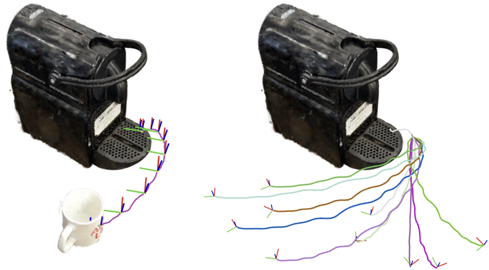

Anonymous Authors, Under Peer Review
Abstract
Scaling robot learning requires vast and diverse datasets. Yet the prevailing data collection paradigm—human teleoperation—remains costly and constrained by manual effort and physical robot access. We introduce Real2Render2Real (R2R2R), a scalable pipeline for generating robot training data without physics simulation or teleoperation. Using a smartphone-captured scan of one or more objects and a single monocular human demonstration, R2R2R reconstructs detailed 3D object geometry and appearance, tracks 6-DoF object motion, and synthesizes thousands of physically plausible, robot-agnostic demonstrations through parallel-environment photorealistic rendering and inverse kinematics. Data generated by R2R2R integrates directly with models that operate on robot proprioceptive states and image observations, such as vision-language-action models (VLA) and imitation learning policies. Physical experiments suggest that models trained on R2R2R data alone can achieve comparable performance to those trained on teleoperated demonstrations, with model performance scaling with the amount and diversity of R2R2R data, while requiring 1/27 of the time to generate. By decoupling data generation from physical robot constraints, R2R2R enables the computational scaling of robot datasets to support increasingly capable generalist policies.This is often a point of confusion for our project so here's a section dedicated to clearing it up:
When we refer to simulation, we mean the use of a physics engine to computationally model and simulate dynamic interactions in the environment. In contrast, rendering refers to generating visual data from a graphics engine. In our project, we use IsaacLab, which is commonly used as a physics simulator. However, we disable its dynamics simulation capabilities and instead use it solely as a rendering engine. This allows us to generate high-quality synthetic visual observations and robot kinematic data, which can be used to train imitation learning policies.
Real World Demos
Performance Scaling

Comparative analysis of imitation-learning policies trained on R2R2R-generated data against human teleoperation data across 1050 physical robot experiments and 5 robotic tasks.
Scan, Track, Render
Rendering More Embodiments
Part trajectories from a single demonstration can be retargeted across different robot embodiments.
Randomization Range
We randomize initial object poses to generate diverse synthetic rollouts for each object-task combination.
Trajectory Interpolation
From a single demonstration, R2R2R generates a distribution of plausible trajectories by interpolating 6-DoF part motion.
BibTeX (To be Updated)
@article{real2render2real,
title={Real2Render2Real: Scaling Robotic Manipulation Data Without Dynamics Simulation or Robot Hardware},
author={real2render2real@gmail.com},
year={2025},
}